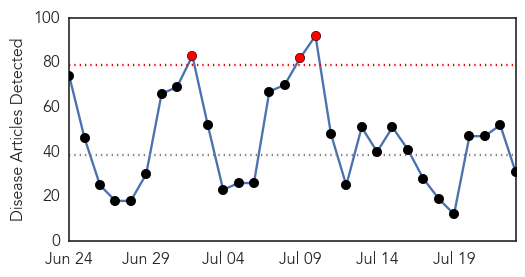
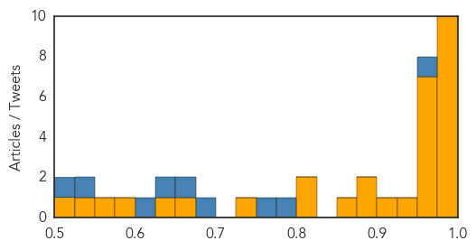

Ebola
30-Day Web Trend
3 alerts, 0 warnings

30-Day Twitter Trend
2 alerts, 0 warnings
Article Locations
Article Confidences
Top Articles:
- 1.000
- Ebola outbreak: Guinea health team killed
- 1.000
- Liberia vows prosecution for hiding Ebola patients
- 1.000
- Ghanaian doctor recounts traumatic experience with Ebola in Liberia
- 0.999
- Government relaxes airport Ebola screening as virus oubreak eases in West Africa
- 0.999
- Ebola cases not slowing in Guinea, Sierra Leone
- 0.998
- Health specialists call for $2 billion global fund for vaccines
- 0.996
- PHE adjusts screening measures as risk posed by Ebola epidemic declines
- 0.987
- Liberia Ends Ebola- Again
- 0.979
- Equatorial Guinea Hosts International Conference On Africa's Fight Against Ebola
- 0.978
- Out of the news but still hitting Africa
- 0.973
- Nigeria donates N230million to fight Ebola
- 0.970
- Antiviral compound protects nonhuman primates against Marburg virus
- 0.968
- Experts propose $2 billion global vaccine fund
- 0.962
- The Liberian Observer
- 0.960
- Look to outer space for help in fighting health threats
- 0.957
- Health worker receives hazard payment- Narrates Ebola story - Liberia
- 0.951
- Equatorial Guinea to provide $3 million toward Ebola fight
- 0.949
- Doctor Suggests That Marijuana Can Protect You From Ebola
- 0.916
- Africa Information
- 0.893
- Are illegal immigrants bringing ‘tremendous’ disease across the border, as Trump says? Unlikely
- 0.877
- Public opinion — a game changer for health systems financing?
- 0.855
- Nigeria’s Polio Eradication Campaign Helped Prevent Ebola Epidemic
- 0.809
- Africa strong when united: Mugabe
- 0.807
- Africa is stronger when united: President
- 0.725
- Fort Worth company that fights Ebola expands to Africa
- 0.663
- Sierra Leone's anti Ebola chief fears prevalence of unsafe burials
- 0.641
- "The UK’s commitment to addressing the Ebola crisis is
- 0.597
- Egypt to aid African countries in fight against Ebola
- 0.567
- Golden Agri Resources : Palm oil company accused of exploiting Ebola crisis to take land
- 0.536
- Egypt, Mauritania to strengthen ties
- 0.511
- The most from the coast
Top Tweets:
- 0.962
- Ebola's Not Done With West Africa | WIRED - Wired http://t.co/c6mUu43TdE ebola EVD
- 0.960
- Drug Might Fight Ebola-like Marburg Virus - US News - U.S. News & World Report http://t.co/t9xbsVaJy5 ebola EVD
- 0.917
- Ebola Update: 27,706 confirmed, probable & suspected cases reported in 3 most affected countries, with 11,269 deaths. EbolaResponse
- 0.916
- Bitcoin: How Barclays might make the 'Ebola' of banking palatable - Campaign - CampaignLive http://t.co/ouQNlNmSCv ebola EVD
- 0.891
- Cured Ebola Doc to Newsmax: I'd Go Back to Virus-Plagued Liberia - http://t.co/4Ejdq3rrXc - Newsmax http://t.co/mM865fBMud ebola EVD
- 0.861
- Plucky Arundel pupils' profits to help Ebola victims - Littlehampton Gazette - Littlehampton Gazette http://t.co/yQaHcA1nqq ebola EVD
- 0.847
- Orientations sur les mesure temporaires de lutte antipaludique dans les pays affectés par le virus Ebola http://t.co/0Bi18sJpiJ
- 0.830
- Together we can defeat Ebola @dannymusic for supporting the fight to kick Ebola out of Africa @eNCA https://t.co/L7244xHhoA
- 0.823
- RT: On the RoadtoZero, CDC staff reached remote parts of West Africa to help control the spread of Ebola. http://t.co/INVl2qQQnE
- 0.808
- Ebola update. 26 new cases (22 GN, 4 SL). Total: 27,705 cases with 11,269 deaths in the most affected countries http://t.co/YvYBYLeA1V
- 0.781
- e-bola movie. The first educational movie made for the medical community about the ebola virus http://t.co/xetMm1Z1Kl
- 0.773
- Doctor who survived Ebola to visit Upstate | Local News - WYFF Home - WYFF Greenville http://t.co/sTyJPqLjNZ ebola EVD
- 0.766
- Ebola fears raised as authorities scale down checks at airports in - Daily Express - Expre http://t.co/7L4RbtlXGW ebola EVD
- 0.754
- In latest update, @WHO reports no new Ebola cases in Liberia: http://t.co/g6s6lccV3w
- 0.722
- Ebola. Plan de riposte stratégique de l'OMS 2015 http://t.co/hvlvwmx8aM
- 0.717
- Les participants au concours de chant Africa Stop Ebola s’entrainent pour la finale qui aura lieu le 29 juillet... http://t.co/iayFeXJNry
- 0.717
- Les participants au concours de chant Africa Stop Ebola s’entrainent pour la finale qui aura lieu le 29 juillet... http://t.co/iJNKCxkv7q
- 0.708
- UK relaxes Ebola screening measures - BBC News - BBC News http://t.co/4b1EMhUUSo ebola EVD
- 0.691
- Road-sign hacker posts Ebola-outbreak, racist messages near Norcross ... - http://t.co/JTlvQ7BQC5 http://t.co/Zo5B2LMs5d ebola EVD
- 0.673
- GuineaBissau Trains for Possible Ebola Outbreak http://t.co/0fCUqQVqLM
- 0.647
- Brave East Kilbride aid worker awarded Queen's Medal for battle against Ebola ... - Scottish Daily Record http://t.co/rf5CzgAp2K ebola EVD
- 0.645
- The Follow-Up on Ebola: Surviving and Soccer in Sierra Leone - The New York Times - New York Times http://t.co/8oKfBKEeCK ebola EVD
- 0.645
- The Follow Up on Ebola: Surviving and Soccer in Sierra Leone - The New York Times - New York Times http://t.co/YJ62Pf6laa ebola EVD
- 0.644
- In latest update, @WHO reports no new Ebola cases in Liberia https://t.co/132mFYWj7J EbolaResponse http://t.co/7WhCgzrNUJ
- 0.639
- 22 new cases of Ebola in Guinea last week, according to the latest data http://t.co/78yOoAh7fi
- 0.634
- Ebola: Out of the news but still hitting Africa - http://t.co/waZJ6QndHu - CNBC http://t.co/zWoOMhhE48 ebola EVD
- 0.553
- Fort Worth company uses E-Mist device to fight Ebola in Africa - http://t.co/wAlDCGiSua - KHOU http://t.co/1XwlCEXtkM ebola EVD
- 0.537
- Fort Worth company that fights Ebola expands to Africa - http://t.co/YrQac085Xw - WFAA http://t.co/wJQtSZxsSM ebola EVD
- 0.537
- Fort Worth company that fights Ebola expands to Africa - http://t.co/YrQac085Xw - WFAA http://t.co/ZR5quReux0 ebola EVD
- 0.509
- People think the world isn't ready for another Ebola epidemic, WorldBank survey says http://t.co/iNMVjXHvpV via
- 0.508
- Government relaxes airport Ebola screening as virus oubreak eases in West ... - http://t.co/15Stao7LDs http://t.co/01paYTW15u
Dengue Fever
30-Day Web Trend
0 alerts, 10 warnings

30-Day Twitter Trend
0 alerts, 0 warnings

Article Locations

Article Confidences

Top Articles:
- 0.970
- Dengue unites Delhi health department and civic bodies : Mail Today, News
- 0.963
- 2 Days, 353 Dengue Cases in State
- 0.941
- CDC experts help American Samoa cope with dengue
- 0.928
- Flood relief camps set up in seven Punjab districts
- 0.925
- In Yemen’s grinding war, if the bombs don’t get you, the water shortages will
- 0.908
- In Yemen’s grinding war, if the bombs don’t get you, the water shortages will
- 0.824
- No bigger emergency reported
- 0.502
- Nurses Invite Pope Francis to Meet to Discuss Health Effects of Climate Crisis
Top Tweets:
-
No tweets found for Jul 23, 2015